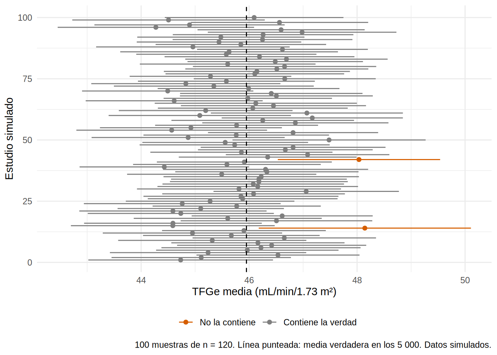
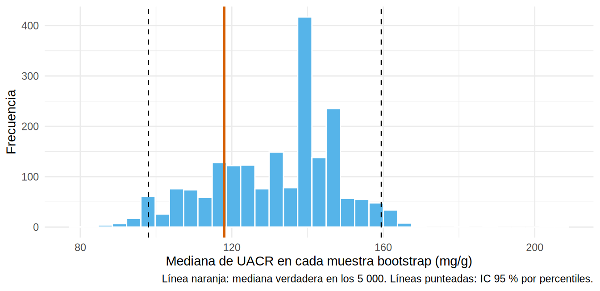

[1] 120Intervalos de confianza y bootstrap
Nota🩺 Escenario
En tu servicio revisaste 120 historias y encontraste una TFGe media de 45 mL/min/1.73 m². Un colega pregunta: “¿y si hubieras revisado otras 120?”. Tiene razón: tu cifra depende de los pacientes que cayeron en la muestra. El intervalo de confianza (IC) es la forma honesta de decir “esto es lo que vi, y esto es cuánto podría moverse”.
Lo que vamos a hacer
- Entender qué significa de verdad un IC 95 % (simulando 100 estudios repetidos).
- Calcular los IC clásicos de una media, una proporción y una diferencia.
- Usar el bootstrap cuando no existe una fórmula (mediana, razón de medianas, diferencia de riesgos).
Paso 1. Montamos un “estudio” pequeño con verdad conocida
En el Cap. 6 vimos que el IC refleja el error de muestreo. Para comprobarlo simulamos tu escenario: una cohorte de 120 pacientes extraída de la población de 5 000 (simulada). Como conocemos la población completa, podremos comparar cada IC con la verdad.
Paso 2. ¿Qué significa un IC del 95 %?
La respuesta corta: si repitieras el estudio muchas veces, el 95 % de los intervalos construidos así contendría el valor verdadero. Lo comprobamos haciendo 100 “estudios” de 120 pacientes cada uno y dibujando sus IC para la TFGe media (la verdad, en los 5 000, es 46.0):
verdad_tfg <- mean(ckd$tfg_basal)
set.seed(2025)
estudios <- map_dfr(1:100, \(i) {
x <- slice_sample(ckd, n = 120)$tfg_basal
ci <- t.test(x)$conf.int
tibble(estudio = i, media = mean(x), inf = ci[1], sup = ci[2])
}) |>
mutate(cubre = inf <= verdad_tfg & sup >= verdad_tfg)
ggplot(estudios, aes(y = estudio, x = media, xmin = inf, xmax = sup, color = cubre)) +
geom_pointrange(size = 0.25) +
geom_vline(xintercept = verdad_tfg, linetype = "dashed") +
scale_color_manual(values = c(`TRUE` = "grey50", `FALSE` = "#D55E00"),
labels = c(`TRUE` = "Contiene la verdad", `FALSE` = "No la contiene"), name = NULL) +
labs(x = "TFGe media (mL/min/1.73 m²)", y = "Estudio simulado",
caption = "100 muestras de n = 120. Línea punteada: media verdadera en los 5 000. Datos simulados.") +
theme_minimal(base_size = 11) + theme(legend.position = "bottom")
Qué vemos. 98 de los 100 intervalos contienen la media verdadera (los naranjas no), cerca del 95 % prometido. Dos advertencias de interpretación:
- El 95 % es una propiedad del procedimiento (de la “receta”), no una probabilidad sobre un intervalo concreto: tu intervalo contiene la verdad o no la contiene, y nunca lo sabrás.
- El ancho del IC depende de tres ingredientes: la variabilidad de los datos (más DE, más ancho), el tamaño de muestra (más n, más estrecho) y el nivel de confianza (99 % es más ancho que 95 %).
La fórmula del IC de una media junta esos tres ingredientes: media ± t × (DE / √n). Con nuestra muestra s y a mano:
[1] 43.24363 46.72470Es el mismo intervalo que dará t.test() en el siguiente paso. Y el efecto de n sobre el ancho, con la DE real de la TFGe en la población:
# A tibble: 4 × 2
n ancho_del_ic
<dbl> <dbl>
1 30 7.06
2 120 3.42
3 500 1.66
4 5000 0.52Para cuadruplicar la precisión (dividir el ancho a la mitad) necesitas cuatro veces más pacientes: la precisión sube con la raíz de n.
Paso 3. Los IC clásicos
Para los estadísticos más comunes ya existen fórmulas implementadas en R:
| Estadístico | Método | Función en R |
|---|---|---|
| Media | t de Student | t.test(x)$conf.int |
| Proporción | Wilson o exacto |
prop.test(), binom.test()
|
| Diferencia de medias | t de Welch | t.test(y ~ g) |
| Diferencia o razón de proporciones | Wald / Wilson |
prop.test(), Cap. 2 |
| Mediana, razón de medianas, cualquier estadístico “raro” | Bootstrap | boot() |
## Media de TFGe
t.test(s$tfg_basal)$conf.int[1] 43.24363 46.72470
attr(,"conf.level")
[1] 0.95[1] 0.2667083 0.4430441
attr(,"conf.level")
[1] 0.95## Diferencia de TFGe entre tratados y no tratados (Welch)
t.test(tfg_basal ~ isglt2, data = s)
Welch Two Sample t-test
data: tfg_basal by isglt2
t = -3.6018, df = 118, p-value = 0.0004637
alternative hypothesis: true difference in means between group 0 and group 1 is not equal to 0
95 percent confidence interval:
-9.339248 -2.712921
sample estimates:
mean in group 0 mean in group 1
41.87069 47.89677 Cómo se lee. Para la media: la TFGe media en esta cohorte es 45.0 y el IC va de 43.2 a 46.7. Para la proporción con ECV: 35.0 % (IC 27-44 %). Los valores verdaderos en la población de 5 000 son TFGe = 46.0 y ECV = 27.3 %: ambos caen dentro de sus intervalos. Para la diferencia entre grupos, el intervalo es de aproximadamente −9.3 a −2.7: como no incluye 0, los tratados tienen una TFGe mayor.
Una nota práctica: el IC de una media geométrica se calcula en escala logarítmica y se devuelve con exp(), p. ej. exp(t.test(log(s$uacr))$conf.int).
Paso 4. ¿Y si no existe una fórmula? El bootstrap
¿Cuál es el error estándar de la mediana de la UACR? ¿Y de una razón de medianas o de un NNT? No hay fórmulas simples. El bootstrap las sustituye por un procedimiento (la idea es: tu muestra es lo mejor que sabes de la población, así que remuestréala):
- Toma, con reposición, una muestra del mismo tamaño que la tuya (una “muestra bootstrap”): algunos pacientes se repiten y otros no aparecen.
- Calcula el estadístico (aquí, la mediana) en esa muestra.
- Repite miles de veces.
- La variación de esos estadísticos aproxima la variación que tendrías en muestras nuevas.
Lo programamos “a mano” para entender la idea:
mediana_observada EE_bootstrap 2.5% 97.5%
137.50000 16.26281 98.00000 159.50000 tibble(mediana = medianas) |>
ggplot(aes(mediana)) +
geom_histogram(bins = 35, fill = "#56B4E9", color = "white") +
geom_vline(xintercept = median(ckd$uacr), color = "#D55E00", linewidth = 1) +
geom_vline(xintercept = quantile(medianas, c(.025, .975)), linetype = "dashed") +
labs(x = "Mediana de UACR en cada muestra bootstrap (mg/g)", y = "Frecuencia",
caption = "Línea naranja: mediana verdadera en los 5 000. Líneas punteadas: IC 95 % por percentiles.") +
theme_minimal(base_size = 11)
Qué vemos. La mediana observada en la muestra es 137.5 mg/g y el IC bootstrap por percentiles va de 98 a 159.5; la mediana verdadera (118) cae dentro. El histograma es la “distribución de muestreo” de la mediana, construida sin ninguna fórmula.
Paso 5. El paquete boot
boot() hace lo mismo con más control y permite métodos de IC más finos (BCa, que corrige sesgo y asimetría). Le entregas una función que recibe los datos y los índices de la muestra bootstrap:
ORDINARY NONPARAMETRIC BOOTSTRAP
Call:
boot(data = s, statistic = mediana_fn, R = 4000)
Bootstrap Statistics :
original bias std. error
t1* 137.5 -4.853375 15.96598BOOTSTRAP CONFIDENCE INTERVAL CALCULATIONS
Based on 4000 bootstrap replicates
CALL :
boot.ci(boot.out = b, type = c("perc", "bca"))
Intervals :
Level Percentile BCa
95% ( 98.0, 161.0 ) ( 97.7, 159.5 )
Calculations and Intervals on Original ScaleCómo elegir. El método percentil es simple y casi siempre razonable. El BCa corrige sesgo y asimetría y es la opción más recomendada con muestras de tamaño pequeño o moderado, pero necesita más réplicas (≥ 2 000). Aquí los dos dan intervalos parecidos.
Razón de medianas entre dos grupos
El bootstrap de dos muestras debe remuestrear dentro de cada grupo (strata) para mantener el tamaño de cada uno:
estimado
1.772727 boot.ci(b2, type = "perc")BOOTSTRAP CONFIDENCE INTERVAL CALCULATIONS
Based on 4000 bootstrap replicates
CALL :
boot.ci(boot.out = b2, type = "perc")
Intervals :
Level Percentile
95% ( 1.274, 2.282 )
Calculations and Intervals on Original ScaleLa UACR mediana es 1.77 veces mayor en los tratados (lo vimos en la Tabla 1, Cap. 7.2); el IC 1.27-2.28 no incluye 1.
Diferencia de riesgos con IC bootstrap
El riesgo crudo de evento renal a 36 meses es 19.2 % en los no tratados y 10.9 % en los tratados. Su diferencia, con IC bootstrap y con la fórmula de Wald para compararlos:
dif_riesgos IC_inf IC_sup
-0.08313930 -0.10304896 -0.06290687 [1] -0.10272611 -0.06355249Los dos IC casi coinciden (la diferencia es de unos 8.3 puntos porcentuales menos de riesgo en los tratados): para estadísticos con fórmula, el bootstrap da lo mismo. Su ventaja aparece cuando no hay fórmula (estimadores ajustados con IPW, g-fórmula, NNT). Esta diferencia es cruda: sin ajustar por las diferencias de la Tabla 1 no es el efecto causal.
Advertencia⚠️ Cuándo el bootstrap falla o necesita cuidado
- Datos agrupados (varios registros por paciente, pacientes dentro de centros): se remuestrean los pacientes (o centros) completos, no las filas.
- Muestras muy pequeñas (n < 20) o estadísticos de extremos (máximo, percentil 99): el bootstrap no funciona bien.
- No corrige sesgos de selección ni de medición; solo cuantifica el error de muestreo.
-
Fija la semilla (
set.seed()) y usa suficientes réplicas (2 000-10 000). - Si el estimador incluye varios pasos (ajustar un modelo de propensión y luego ponderar), todo el proceso debe repetirse en cada muestra bootstrap.
Importante🎯 En resumen
- Reporta siempre el IC junto a la estimación. Un IC 95 % describe la “receta”: 95 de cada 100 estudios repetidos lo contendrían.
- Su ancho depende de la variabilidad, el tamaño de muestra (√n) y el nivel de confianza.
- Para medias, proporciones y diferencias existen fórmulas (
t.test,prop.test). - Para medianas, razones y estimadores complejos, el bootstrap: remuestrear con reposición, recalcular, repetir y mirar la variación.
- Con
boot(): funciónf(datos, i),R = 2000+,stratapara dos grupos,boot.ci(type = c("perc", "bca")).
Ejercicio
- Calcula el IC 95 % por bootstrap de la media geométrica de la UACR en la muestra
sy compáralo conexp(t.test(log(s$uacr))$conf.int). - Repite el IC de la mediana de UACR con
n = 30, 120 y 500. ¿Cómo cambia el ancho del intervalo? - Calcula con
boot()el IC de la diferencia de medianas de TFGe entre tratados y no tratados.